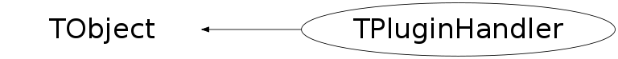

class TPluginHandler: public TObject
TPluginManager This class implements a plugin library manager. It keeps track of a list of plugin handlers. A plugin handler knows which plugin library to load to get a specific class that is used to extend the functionality of a specific base class and how to create an object of this class. For example, to extend the base class TFile to be able to read RFIO files one needs to load the plugin library libRFIO.so which defines the TRFIOFile class. This loading should be triggered when a given URI contains a regular expression defined by the handler. Plugin handlers can be defined via macros in a list of plugin directories. With $ROOTSYS/etc/plugins the default top plugin directory specified in $ROOTSYS/etc/system.rootrc. Additional directories can be specified by adding them to the end of the list. Macros for identical plugin handlers in later directories will override previous ones (the inverse of normal search path behavior). The macros must have names like <BaseClass>/PX0_<PluginClass>.C, e.g.: TFile/P10_TRFIOFile.C, TSQLServer/P20_TMySQLServer.C, etc. to allow easy sorting and grouping. If the BaseClass is in a namespace the directory must have the name NameSpace@@BaseClass as : is a reserved pathname character on some operating systems. Macros not beginning with 'P' and ending with ".C" are ignored. These macros typically look like: void P10_TDCacheFile() { gPluginMgr->AddHandler("TFile", "^dcache", "TDCacheFile", "DCache", "TDCacheFile(const char*,Option_t*)"); } Plugin handlers can also be defined via resources in the .rootrc file. Although now deprecated this method still works for backward compatibility, e.g.: Plugin.TFile: ^rfio: TRFIOFile RFIO "<constructor>" Plugin.TSQLServer: ^mysql: TMySQLServer MySQL "<constructor>" +Plugin.TSQLServer: ^pgsql: TPgSQLServer PgSQL "<constructor>" Plugin.TVirtualFitter: * TFitter Minuit "TFitter(Int_t)" Where the + in front of Plugin.TSQLServer says that it extends the existing definition of TSQLServer, useful when there is more than one plugin that can extend the same base class. The "<constructor>" should be the constructor or a static method that generates an instance of the specified class. Global methods should start with "::" in their name, like "::CreateFitter()". Instead of being a shared library a plugin can also be a CINT script, so instead of libDialog.so one can have Dialog.C. The * is a placeholder in case there is no need for a URI to differentiate between different plugins for the same base class. For the default plugins see $ROOTSYS/etc/system.rootrc. Plugin handlers can also be registered at run time, e.g.: gPluginMgr->AddHandler("TSQLServer", "^sapdb:", "TSapDBServer", "SapDB", "TSapDBServer(const char*,const char*, const char*)"); A list of currently defined handlers can be printed using: gPluginMgr->Print(); // use option="a" to see ctors The use of the plugin library manager removes all textual references to hard-coded class and library names and the resulting dependencies in the base classes. The plugin manager is used to extend a.o. TFile, TSQLServer, TGrid, etc. functionality.
Function Members (Methods)
public:
| void | TObject::AbstractMethod(const char* method) const |
| virtual void | TObject::AppendPad(Option_t* option = "") |
| virtual void | TObject::Browse(TBrowser* b) |
| Int_t | CheckPlugin() const |
| static TClass* | Class() |
| virtual const char* | TObject::ClassName() const |
| virtual void | TObject::Clear(Option_t* = "") |
| virtual TObject* | TObject::Clone(const char* newname = "") const |
| virtual Int_t | TObject::Compare(const TObject* obj) const |
| virtual void | TObject::Copy(TObject& object) const |
| virtual void | TObject::Delete(Option_t* option = "")MENU |
| virtual Int_t | TObject::DistancetoPrimitive(Int_t px, Int_t py) |
| virtual void | TObject::Draw(Option_t* option = "") |
| virtual void | TObject::DrawClass() constMENU |
| virtual TObject* | TObject::DrawClone(Option_t* option = "") constMENU |
| virtual void | TObject::Dump() constMENU |
| virtual void | TObject::Error(const char* method, const char* msgfmt) const |
| Long_t | ExecPlugin(Int_t nargs) |
| virtual void | TObject::Execute(const char* method, const char* params, Int_t* error = 0) |
| virtual void | TObject::Execute(TMethod* method, TObjArray* params, Int_t* error = 0) |
| virtual void | TObject::ExecuteEvent(Int_t event, Int_t px, Int_t py) |
| virtual void | TObject::Fatal(const char* method, const char* msgfmt) const |
| virtual TObject* | TObject::FindObject(const char* name) const |
| virtual TObject* | TObject::FindObject(const TObject* obj) const |
| const char* | GetClass() const |
| virtual Option_t* | TObject::GetDrawOption() const |
| static Long_t | TObject::GetDtorOnly() |
| virtual const char* | TObject::GetIconName() const |
| virtual const char* | TObject::GetName() const |
| virtual char* | TObject::GetObjectInfo(Int_t px, Int_t py) const |
| static Bool_t | TObject::GetObjectStat() |
| virtual Option_t* | TObject::GetOption() const |
| virtual const char* | TObject::GetTitle() const |
| virtual UInt_t | TObject::GetUniqueID() const |
| virtual Bool_t | TObject::HandleTimer(TTimer* timer) |
| virtual ULong_t | TObject::Hash() const |
| virtual void | TObject::Info(const char* method, const char* msgfmt) const |
| virtual Bool_t | TObject::InheritsFrom(const char* classname) const |
| virtual Bool_t | TObject::InheritsFrom(const TClass* cl) const |
| virtual void | TObject::Inspect() constMENU |
| void | TObject::InvertBit(UInt_t f) |
| virtual TClass* | IsA() const |
| virtual Bool_t | TObject::IsEqual(const TObject* obj) const |
| virtual Bool_t | TObject::IsFolder() const |
| Bool_t | TObject::IsOnHeap() const |
| virtual Bool_t | TObject::IsSortable() const |
| Bool_t | TObject::IsZombie() const |
| Int_t | LoadPlugin() |
| virtual void | TObject::ls(Option_t* option = "") const |
| void | TObject::MayNotUse(const char* method) const |
| virtual Bool_t | TObject::Notify() |
| void | TObject::Obsolete(const char* method, const char* asOfVers, const char* removedFromVers) const |
| static void | TObject::operator delete(void* ptr) |
| static void | TObject::operator delete(void* ptr, void* vp) |
| static void | TObject::operator delete[](void* ptr) |
| static void | TObject::operator delete[](void* ptr, void* vp) |
| void* | TObject::operator new(size_t sz) |
| void* | TObject::operator new(size_t sz, void* vp) |
| void* | TObject::operator new[](size_t sz) |
| void* | TObject::operator new[](size_t sz, void* vp) |
| virtual void | TObject::Paint(Option_t* option = "") |
| virtual void | TObject::Pop() |
| virtual void | Print(Option_t* opt = "") const |
| virtual Int_t | TObject::Read(const char* name) |
| virtual void | TObject::RecursiveRemove(TObject* obj) |
| void | TObject::ResetBit(UInt_t f) |
| virtual void | TObject::SaveAs(const char* filename = "", Option_t* option = "") constMENU |
| virtual void | TObject::SavePrimitive(ostream& out, Option_t* option = "") |
| void | TObject::SetBit(UInt_t f) |
| void | TObject::SetBit(UInt_t f, Bool_t set) |
| virtual void | TObject::SetDrawOption(Option_t* option = "")MENU |
| static void | TObject::SetDtorOnly(void* obj) |
| static void | TObject::SetObjectStat(Bool_t stat) |
| virtual void | TObject::SetUniqueID(UInt_t uid) |
| virtual void | ShowMembers(TMemberInspector& insp) |
| virtual void | Streamer(TBuffer& b) |
| void | StreamerNVirtual(TBuffer& b) |
| virtual void | TObject::SysError(const char* method, const char* msgfmt) const |
| Bool_t | TObject::TestBit(UInt_t f) const |
| Int_t | TObject::TestBits(UInt_t f) const |
| virtual void | TObject::UseCurrentStyle() |
| virtual void | TObject::Warning(const char* method, const char* msgfmt) const |
| virtual Int_t | TObject::Write(const char* name = 0, Int_t option = 0, Int_t bufsize = 0) |
| virtual Int_t | TObject::Write(const char* name = 0, Int_t option = 0, Int_t bufsize = 0) const |
protected:
| virtual void | TObject::DoError(int level, const char* location, const char* fmt, va_list va) const |
| void | TObject::MakeZombie() |
private:
| TPluginHandler() | |
| TPluginHandler(const TPluginHandler&) | |
| TPluginHandler(const char* base, const char* regexp, const char* className, const char* pluginName, const char* ctor, const char* origin) | |
| (unknown) | () |
| Bool_t | CanHandle(const char* base, const char* uri) |
| const char* | GetBase() const |
| const char* | GetCtor() const |
| const char* | GetOrigin() const |
| const char* | GetPlugin() const |
| const char* | GetRegexp() const |
| TPluginHandler& | operator=(const TPluginHandler&) |
| void | SetupCallEnv() |
Data Members
public:
| enum TObject::EStatusBits { | kCanDelete | |
| kMustCleanup | ||
| kObjInCanvas | ||
| kIsReferenced | ||
| kHasUUID | ||
| kCannotPick | ||
| kNoContextMenu | ||
| kInvalidObject | ||
| }; | ||
| enum TObject::[unnamed] { | kIsOnHeap | |
| kNotDeleted | ||
| kZombie | ||
| kBitMask | ||
| kSingleKey | ||
| kOverwrite | ||
| kWriteDelete | ||
| }; |
private:
| TString | fBase | base class which will be extended by plugin |
| TMethodCall* | fCallEnv | !ctor method call environment |
| Int_t | fCanCall | !if 1 fCallEnv is ok, -1 fCallEnv is not ok |
| TString | fClass | class to be loaded from plugin library |
| TString | fCtor | ctor used to instantiate object of fClass |
| Bool_t | fIsGlobal | plugin ctor is a global function |
| Bool_t | fIsMacro | plugin is a macro and not a library |
| TFunction* | fMethod | !ctor method or global function |
| TString | fOrigin | origin of plugin handler definition |
| TString | fPlugin | plugin library which should contain fClass |
| TString | fRegexp | regular expression which must be matched in URI |
Class Charts
{kind=link}
{kind=link}
{kind=link}
{kind=link}

Function documentation
TPluginHandler(const char* base, const char* regexp, const char* className, const char* pluginName, const char* ctor, const char* origin)
Create a plugin handler. Called by TPluginManager.
Int_t CheckPlugin() const
Check if the plugin library for this handler exits. Returns 0 when it exists and -1 in case the plugin does not exist.
Int_t LoadPlugin()
Load the plugin library for this handler. Returns 0 on successful loading and -1 in case the library does not exist or in case of error.
Long_t ExecPlugin(Int_t va_(nargs), ...)
Execute ctor for this plugin and return pointer to object of specific class. User must cast the returned long to the correct class. This method accepts a variable number of arguments to be passed to the ctor, where nargs is the number of arguments, followed by nargs arguments. Returns 0 in case of error.
void Print(Option_t* opt = "") const
Print info about the plugin handler. If option is "a" print also the ctor's that will be used.
TPluginHandler(const char* base, const char* regexp, const char* className, const char* pluginName, const char* ctor, const char* origin)
TPluginHandler& operator=(const TPluginHandler& )